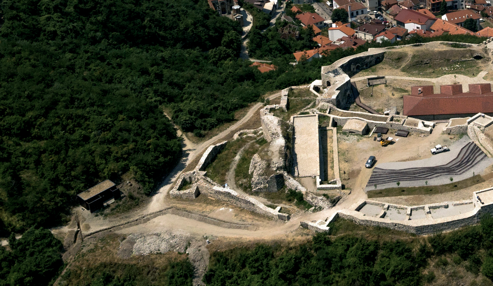

Resurset dhe trashëgimia e vendit tim
Ruajmë trashëgiminë kulturore
Situata 1.
Familja Gashi kishte dalë për ta kaluar fundjavën në qytetin e Prizrenit. Hëna, 10-vjeçare, po e shijonte shumë atë udhëtim. Kureshtja e saj u shtua kur pa gjithë ato ndërtesa të vjetra: muze, kala dhe vende që përfaqësonin denjësisht kulturën e vendit tonë. E kush tjetër do të mund t’i jepte përgjigje më të sakta sesa babai i saj, zejtar në qytetin e Gjakovës!
- Babi, a mund të më tregosh prapë se çka konsiderohet trashëgimi kulturore?
- Po, Hëna. Të gjitha parqet natyrore, galeritë e artit, kalatë, kullat, shtëpitë e vjetra, monumentet fetare, rrugicat e ngushta, shatërvanët dhe shumë objekte të tjera janë elemente që kanë rëndësi të madhe për ruajtjen e kulturës dhe të traditës shqiptare.
- Të gjitha këto që i përmende qenkan objekte. A ka edhe gjëra të tjera që përfaqësojnë trashëgiminë kulturore?
- Po, sigurisht. Trashëgimia jomateriale përfshin gjuhën dhe krijimtaritë popullore.
- Cilat janë disa nga monumentet kryesore arkeologjike?
- Mund të përmendim qytetin e lashtë të Ulpianës, Manastirin e Deçanit dhe Shtëpinë e Lidhjes së Prizrenit. Kosova ka edhe shumë muze.
Veshjet dhe gatimet tradicionale që përcillen brez pas brezi janë mjaft unike.
- E mrekullueshme. Mezi po pres që për gjërat që mësova sot, të bisedoj me shokët dhe mësuesen në shkollë.
